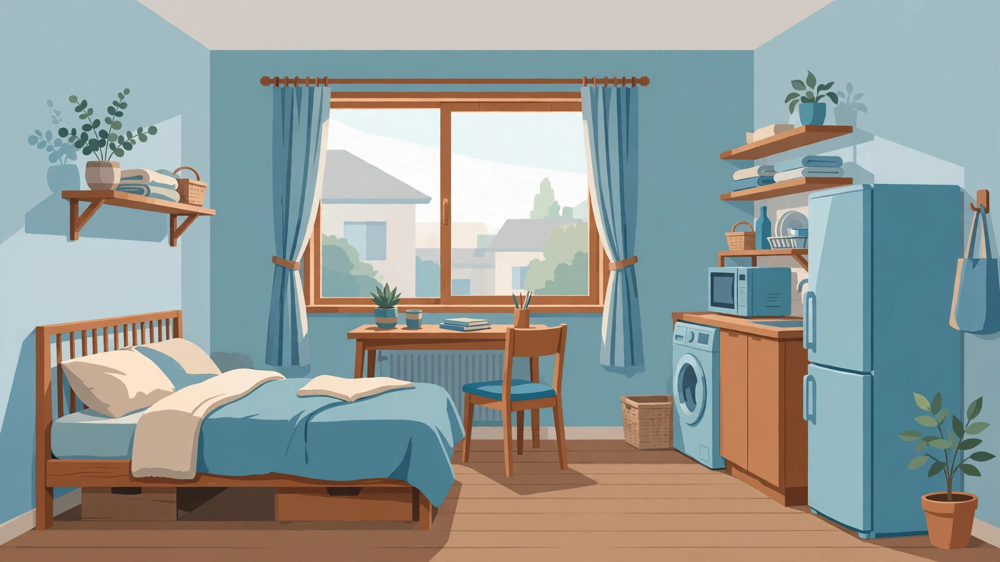

一人暮らしの初期費用の中でも、自分の選び方次第で最も金額を調整しやすいのが「家具・家電の購入費用」です。賃貸物件の契約費はある程度家賃に連動して決まりますが、家具家電は「入居初日から揃える範囲」と「選ぶグレードや購入方法」によって10万円以上の差が生まれます。
一方で、予算を抑えようとして必要なものまで買い漏らしてしまうと、引越し初日の夜に明かりやカーテンがなかったり、サイズ違いで搬入できなかったりといった失敗につながりかねません。
結論として、実家などからの持ち込みなしで一から揃える場合、一人暮らしの家具家電にかかる初期費用は最低限セットで10万〜20万円が一般的な目安、一通り揃える標準セットで10万〜25万円が一般的な目安です（別途、細かな日用品・生活雑貨に1万〜3万円前後を見込むと安心です）。
本記事では、最低限プランと標準プランの比較表、優先度3段階別の品目・価格目安リスト、新生活セット購入と単品選びの比較、そして購入前に確認すべき採寸・設備チェックリストを整理します。（※賃貸契約費や引越し代を含めた初期費用全体の目安は「一人暮らしの初期費用まとめ」をご参照ください。）
この記事のポイント（家具家電の初期費用目安）
- 最低限セットの費用目安：10万〜20万円（冷蔵庫・洗濯機・電子レンジ・寝具・カーテン・照明など初日必須品に絞った構成）
- 標準セットの費用目安：10万〜25万円（上記に加え、ベッドフレーム・テーブル・炊飯器・掃除機・収納等を含めた構成）
- 初期の日用品・雑貨目安：1万〜3万円前後（消耗品・ハンガー・ゴミ箱・基本調理具など）
- 予算オーバーを防ぐ鉄則：「◎初日から必須」の品目だけを入居日配送で手配し、テーブルや収納家具などの「△様子見でも可」の品目は入居後に部屋を測ってから買い足す段階購入が有効
- 全体の初期費用と合算する：「初期費用シミュレーター」では家賃と家具家電プランを組み合わせた総額を試算できます。
一人暮らしの家具家電にかかる初期費用目安｜「最低限」と「標準」の比較
※家具家電購入費は全体総額（おおよそ40万〜70万円目安）の約25〜35%を占め、入居初日必須品への絞り込みや段階購入で調整しやすい費目です。
まずは「最初は必要最小限でスタートする場合」と「生活環境を一通り整えてスタートする場合」で、総額と対象品目がどう変わるのかを比較しましょう。
| 比較項目 | 最低限セット（ミニマム構成） | 標準セット（ベーシック構成） |
|---|---|---|
| 家具家電本体の費用目安 | 10万〜20万円 | 10万〜25万円 |
| 初期日用品・雑貨の目安 | 1万〜2万円前後 | 1.5万〜3万円前後 |
| 合わせた予算目安 | 約11万〜22万円 | 約11.5万〜28万円 |
| 含まれる主な家電 | 冷蔵庫、洗濯機、電子レンジ、照明器具（※未設置時） | 左記＋炊飯器、電気ケトル、掃除機、ドライヤー等 |
| 含まれる主な家具・寝具 | 布団・マットレス一式、カーテン（遮光＋レース） | 左記＋ベッドフレーム、ローテーブルまたはデスク＆チェア、収納ラック等 |
| 向いている人 | 初期キャッシュアウトを抑えたい人、部屋を広く使いたい人、住みながら少しずつ選びたい人 | 入居直後から自炊や在宅ワーク・オンライン授業を本格的に始めたい人 |
「最低限」と「標準」の下限がどちらも10万円前後からになっている理由
新生活シーズン（1〜4月前後）を中心に、家電量販店やECモールでは「冷蔵庫・洗濯機・電子レンジ（＋炊飯器・掃除機など）」をまとめた新生活家電セットが販売されます。機能や容量を単身向けのベーシックモデルに絞れば、品目数が標準セット相当であっても10万円台前半〜半ばに収まるケースがあるためです。
逆に、最低限の品目数であっても「自炊用に大きめの2ドア冷蔵庫を選ぶ」「静音性の高い洗濯機や厚手のマットレスを選ぶ」といったこだわりを入れると15万〜20万円前後になります。品目数だけでなく「どの品目に予算を配分するか」が総額を左右します。
【優先度別】家具家電の品目ごと価格目安と必須・任意の仕分け一覧
入居前にすべての家具家電を買い揃える必要はありません。生活立ち上げ時の重要度に応じて、「◎：入居初日から必須」「○：生活スタイルによって必要」「△：入居後に様子を見て購入でも可」の3段階に仕分けた一覧表が以下です。
| 優先度 | 品目 | 単品の価格目安 | 選び方・サイズ確認のポイント |
|---|---|---|---|
| ◎ 必須 | カーテン（ドレープ＋レース） | 4,000〜12,000円 | 防犯・プライバシー保護・断熱のため初日から必須。窓の幅と高さを内見時に必ず実測する |
| ◎ 必須 | 照明器具（シーリングライト） | 4,000〜10,000円 | 居室に照明が備え付けられていない物件では初日の夜から必要。天井の引掛シーリング形状を確認 |
| ◎ 必須 | 寝具一式（布団／マットレス） | 10,000〜25,000円 | 初日から睡眠をとるために必須。ベッドフレームを後回しにする場合もマットレスや敷布団は必要 |
| ◎ 必須 | 冷蔵庫（単身用） | 25,000〜50,000円 | 自炊少なめなら130L前後、自炊派・作り置き派なら150〜170L以上（耐熱天板だと上にレンジを置ける） |
| ◎ 必須 | 洗濯機（縦型4.5〜6kg） | 25,000〜50,000円 | コインランドリー併用でない限り準必須。防水パンの内寸・蛇口高さ・搬入通路幅の事前採寸が不可欠 |
| ◎ 必須 | 電子レンジ | 8,000〜25,000円 | 温め中心なら単機能レンジ（1万円前後目安）、トーストやお菓子・料理も作るならオーブンレンジを検討 |
| ○ 条件別 | ベッドフレーム | 10,000〜25,000円 | ベッド派は必要（マットレスとセットで1.5万〜4.5万円目安）。ベッド下収納付きを選ぶと収納家具を減らせる |
| ○ 条件別 | 炊飯器・電気ケトル・調理具 | 8,000〜20,000円 | 自炊するなら3合炊き炊飯器やフライパン等が必要。パックご飯やレンジ調理中心ならケトルのみで開始も可 |
| ○ 条件別 | ドライヤー・身支度家電 | 3,000〜10,000円 | 日常的に使う人は初日から必要（実家から使い慣れたものを持参できる場合は0円） |
| ○ 物件次第 | ガスコンロ／IHヒーター | 12,000〜25,000円 | コンロ未設置物件のみ必要。都市ガスかプロパン（LP）ガスかの種類間違いに要注意 |
| ○ 物件次第 | エアコン（本体＋標準取付） | 55,000〜90,000円 | 賃貸では1基備え付けが一般的だが、未設置物件の場合は大きな出費になるため物件選び段階で要確認 |
| △ 後回し可 | ローテーブル／デスク＆チェア | 8,000〜25,000円 | 在宅勤務・オンライン授業が初日からある場合は○。そうでなければ部屋の広さを見てから選ぶと失敗しにくい |
| △ 後回し可 | 掃除機 | 5,000〜20,000円 | ワンルーム・1Kのフローリング中心なら、最初はフロアワイパーと粘着クリーナー（数千円）で代替可能 |
| △ 後回し可 | テレビ・テレビ台 | 20,000〜50,000円 | PC・タブレット・スマホの動画配信で足りる場合は不要。置く場合もアンテナ端子の位置を見てから検討可 |
| △ 後回し可 | ソファ・大型収納棚・ラグ | 10,000〜40,000円 | 6〜7畳前後の居室に最初から置くと圧迫感が出やすいため、生活動線が固まってからの検討が安全 |
※上記とあわせて、初週に必要な日用品（トイレットペーパー、ティッシュ、浴室・食器洗剤、スポンジ、タオル類、ハンガー、ゴミ箱、延長コード等）として1万〜3万円前後を見込んでおきましょう。
「新生活家電セット」と「単品購入」「家具家電付き・リユース」はどれを選ぶべき？
家具家電を揃えるルートには大きく4つの方法があります。初期費用の安さだけでなく、手間や退去時の扱いも含めて比較しましょう。
| 調達方法 | 初期費用の目安感 | メリット | 注意点・確認ポイント |
|---|---|---|---|
| ① 新生活家電セット購入 （ECモール・量販店） |
抑えやすい （家電一式で6万〜12万円前後目安＋家具寝具） |
・冷蔵庫＋洗濯機＋レンジ等をまとめて手配でき配送日も揃えやすい ・単品合計より割安に設定されることが多い |
・冷蔵庫容量が小さめ（90〜130L等）や単機能レンジ固定の場合がある ・自炊頻度や防水パン寸法に合うか個別型番の確認が必要 |
| ② 新品を単品ごとに選ぶ | 標準〜やや高め （12万〜25万円以上目安） |
・冷蔵庫だけ大きめ、洗濯機だけ静音モデルなどメリハリ配分ができる ・デザインや色を統一しやすい |
・複数ショップで注文すると配送の受け取り立会いが分散しやすい ・合計金額が膨らみやすいため上限予算の管理が重要 |
| ③ リサイクルショップ・フリマ活用 | 低く抑えやすい | ・購入単価を下げられる場合がある | ・製造年数が古い家電は省エネ性能や故障リスク、保証期間（数ヶ月〜保証なし等）の確認が必要 ・大型品の配送料・設置料が別途かかると新品エントリー機と差が縮まることがある |
| ④ 家具家電付き賃貸・サブスク | 購入費は大幅軽減 （雑貨・寝具等の3万〜8万円目安） |
・入居時の購入手配と退去時の処分・引越し運搬の手間が少ない ・2年以内の短期居住（学生・単身赴任等）と相性がよい場合がある |
・一般物件より月額家賃が数千〜1万円前後高めの場合があり、4年以上住むと購入した方が総額を抑えられるケースもある |
編集部おすすめのバランス戦略：「主力2点＋小物」のメリハリ配分
予算を10万〜20万円前後に収めつつ生活満足度を下げない方法として有効なのが、「毎日使い買い替えにくい冷蔵庫・洗濯機・マットレスには必要なスペックを確保し、電子レンジ・照明・ケトル・収納小物はシンプルな定番モデルで抑える」という組み合わせです。
特に学生の一人暮らしで4年間住む予定がある場合と、短期間の居住予定とでは最適な調達方法が変わるため、居住予定年数から逆算して検討しましょう。
失敗・予算オーバーを防ぐ！購入前の採寸・設備確認チェックリスト
家具家電の購入で多い失敗は「買ったのに置けない」「物件に最初から付いていた」「追加の取付工事費がかかった」というケースです。注文ボタンを押す前に、内見時や契約書類で以下の7項目を必ずチェックしておきましょう。
なお、入居日に家電が届くスケジュールとあわせて、電気・水道・ガスの開栓予約やインターネット回線（光回線または工事不要Wi-Fi）の手配も並行して進めておくと、入居初日からスムーズに新生活を始められます（手続きの時系列は親記事「一人暮らしの初期費用まとめ」の入居前スケジュール節を参照）。
家具のサイズ選び・レンタル比較の深掘りガイド
ベッド・テーブル・収納の具体的な配置原則と内見時の採寸箇所は「一人暮らしの家具選びと予算・採寸の基本」、単身赴任や短期進学で初期出費を抑えたい場合の損益分岐は「家電レンタルと購入の比較ガイド」で整理しています。新居への直接配送を活用した引越し代の抑え方は「一人暮らしの引越し初期費用チェックリスト」もご覧ください。
一人暮らしの家具家電の初期費用に関するよくある質問（FAQ）
Q1. 家具家電はいつ注文して、いつ届くように手配するのがベストですか？
A. 賃貸借契約が完了し入居日（鍵の引き渡し日）が確定した時点で注文し、配送指定日を引越し当日または翌日に設定するのがスムーズです。特に2月下旬〜4月上旬の新生活繁忙期は人気モデルの在庫切れや配送枠の混雑が起きやすいため、鍵渡し日の2〜3週間前には注文を済ませておくと希望日時を押さえやすくなります。
Q2. 10万円以内で家具家電を一通り揃えることはできますか？
A. 照明やコンロが備え付けの物件を選び、新生活向けの小型家電3点セット（冷蔵庫・洗濯機・単機能レンジで5万〜7万円前後目安）を活用し、ベッドフレームを省いて布団セット＋カーテン＋最低限の雑貨に絞れば、10万円前後に近づけることは可能な場合があります。ただし配送設置費や細かな日用品を含めると10万〜15万円前後になるケースが多いため、少し余裕を見ておくと安心です。
Q3. 賃貸契約費も含めて初期費用全体を最低限に抑えたい場合はどうすればよいですか？
A. 家具家電の段階購入とあわせて、賃貸契約における「敷金・礼金の条件確認」や「任意付帯オプションの精査」を行うのが効果的です。契約面も含めた全体の節約仕分けについては「一人暮らし初期費用の内訳と最低限に抑えるチェックリスト」で詳しく解説しています。
Q4. ガスコンロが備え付けられていない物件では、どんなコンロを買っても使えますか？
A. 賃貸物件のガス種別には主に「都市ガス」と「プロパンガス（LPガス）」の2種類があり、それぞれ専用のガス機器が必要です。ガス種別が異なるコンロは使用できず危険なため、購入前に必ず物件の重要事項説明書や契約書類でガスの種類と設置スペースの幅を確認してから選びましょう。
Q5. 「新生活家電セット」と「1品ずつの単品購入」はどちらが向いていますか？
A. 冷蔵庫・洗濯機・電子レンジなどの基本機能を一度の手配で手早く揃え、初期予算をわかりやすく管理したい方には新生活家電セットが向いています。一方、自炊頻度が高くて大きめの冷蔵庫やオーブン機能が欲しい場合や、静音性の高い洗濯機を選びたい場合は、優先したい家電だけ単品で選ぶ方法が満足度を保ちやすくなります。
まとめ｜「初日必須品」から揃えて賢く初期費用をコントロールしよう
一人暮らしの家具家電にかかる初期費用は、最低限セットで10万〜20万円、標準セットで10万〜25万円（＋初期日用品1万〜3万円前後）が一般的な目安です。
最初から完璧なインテリアを目指すと予算が膨らみやすく、部屋が狭くなる原因にもなります。まずは「カーテン・照明・寝具・冷蔵庫・洗濯機・電子レンジ」といった初日必須アイテムを内見時の採寸データをもとに手配し、テーブルや収納家具は暮らしながら買い足していくことで、無駄のない新生活スタートを切ることができます。
賃貸契約費や引越し代と合わせた全体の予算バランスを確認したい方は、以下のページもあわせてご活用ください。
- 家賃と家具家電プランを合わせて総額を試算する：初期費用シミュレーター
- 初期費用全体の内訳・準備スケジュールを確認する：一人暮らしの初期費用 総まとめガイド
- 契約費用の必須・任意を見極めて総額を抑える：一人暮らし初期費用の内訳チェックリスト
- 家賃帯別の全体相場と比較する：一人暮らし初期費用の相場解説
更新日・数値の確認方法について
- 最終更新日：2026年11月11日
- 執筆・編集：ひとり暮らし初期費用ナビ編集部
- 金額目安の算出・確認方針：本記事に掲載している金額レンジ（家具家電「最低限セット10万〜20万円目安」「標準セット10万〜25万円目安」および各品目の単価目安等）は、家電量販店・インテリアショップ・ECモール等で一般的に販売されている単身向け製品の価格帯をもとに整理した目安です。メーカー、容量、機能グレード、セール時期、配送料・設置工事費の有無によって実際の購入額は変動するため、購入時には各販売店の最新価格および配送条件をご確認ください。（詳細：数値算出基準・出典確認フロー）
出典・参考情報メモ（公開前差し替え用プレースホルダ）
※公開CMS入稿時に以下の公的機関・公式情報ページの最新URLを確認のうえ差し替えを実施する。
[出典プレースホルダ：消費者庁／国民生活センター「インターネット通販・新生活時の家電購入・設置トラブルに関する注意情報」（配送・設置条件やサイズ確認の参考用）][出典プレースホルダ：経済産業省／一般財団法人 家電製品協会「家電リサイクル法（特定家庭用機器再商品化法）関連案内」（将来的な冷蔵庫・洗濯機・エアコン・テレビの処分制度の参考用）][出典プレースホルダ：日本ガス石油機器工業会／主要ガス事業者案内ページ（都市ガス・LPガス用こんろの適合確認に関する公式案内）]